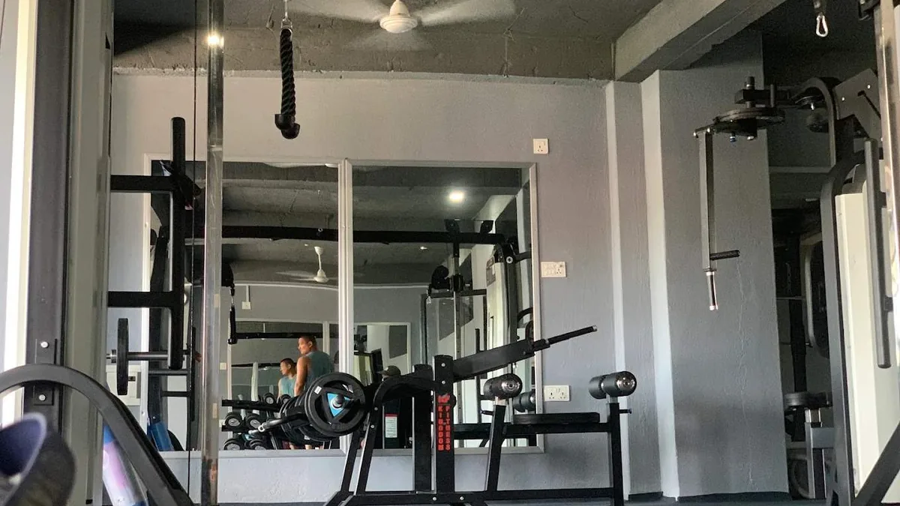
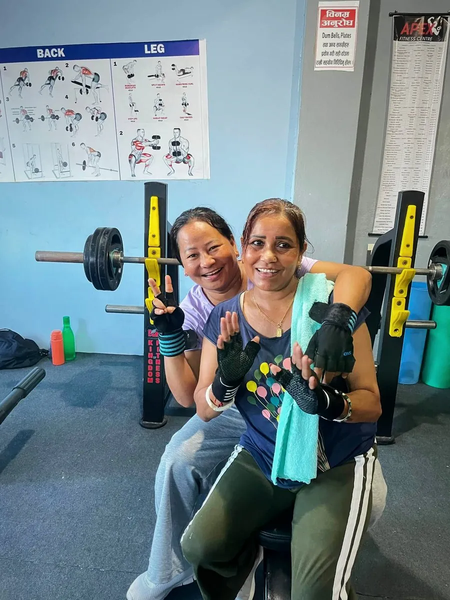
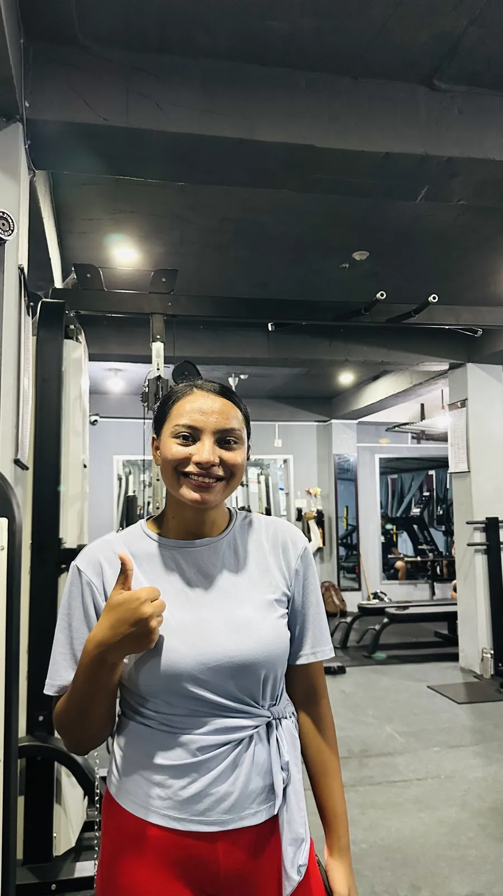

Gym Guide for Women: Your First Visit, What to Train and Common Fears
Nervous about joining a gym as a woman? What to wear, your first day, a simple workout plan, and honest answers to common fears.

If you are a woman thinking about joining a gym, you are not alone in feeling nervous. The most common worries we hear are “everyone will stare,” “I don’t know what to do,” and “I’ll get bulky.” The good news: within two or three weeks, almost every woman who keeps coming feels at home. This guide makes those first weeks much easier.
Before your first visit
- Visit or call first. Ask about timings, women’s changing rooms, and whether a trainer can show you around.
- Pick a quieter time. Mid-morning and early afternoon are usually less busy than early mornings and evenings.
- Bring: water bottle, small towel, indoor shoes, a hair tie, and your phone with music.
- Wear: comfortable leggings or track pants and a T-shirt you can move in. Clean sports shoes with a flat sole are best for lifting.

What to do on day one
- Tour the gym and ask a trainer to show you 4 or 5 machines and where the dumbbells are.
- Warm up for 5 to 10 minutes on a bike, treadmill or cross-trainer.
- Try a short beginner workout (below) with light weights.
- Finish with 5 minutes of stretching.
- Leave feeling good, not exhausted. The goal of day one is to come back on day two.

A member after her session at Apex Fitness Centre, Urlabari. The first few visits are the hardest; after that it becomes your routine.A simple plan for your first month
Train 3 days a week, for example Sunday, Tuesday and Thursday.
| Exercise | Sets x reps | What it trains |
|---|---|---|
| Goblet squat or leg press | 3 x 10 | Thighs and glutes |
| Hip thrust or glute bridge | 3 x 12 | Glutes |
| Lat pulldown | 3 x 10 | Back and posture |
| Dumbbell chest press | 3 x 10 | Chest and arms |
| Seated cable row | 3 x 10 | Upper back |
| Plank | 3 x 20–30 sec | Core |
Add 20 minutes of walking or cycling at the end if you have time. When all sets feel easy, choose the next weight up.
For the full 3-month version, see our beginner gym workout plan.
The 5 fears, answered honestly
“I’ll get bulky”
Very unlikely. Women have much lower levels of testosterone than men and build muscle slowly. What weight training gives most women is a firmer, toned shape, better posture and stronger bones. The “bulky” look you see online usually takes years of specialised training and diet.
“Everyone will look at me”
In reality, most people in a gym are focused on themselves and their own sets. Headphones help you stay in your own world. After a few visits, you will be one of the regulars.
“I don’t know how to use the machines”
Nobody does at first. Ask a trainer. That is what they are there for. Most machines also have a picture guide on the side.
“I’m too unfit to start”
The gym is exactly where you get fit. Start light, and every week you will notice you can do a little more.
“Weights are for men, cardio is for women”
No. Both are for everyone. Strength training is especially valuable for women because it protects bone density, which naturally declines with age.
Food and results
- Most women need more protein than they eat. Aim for protein at every meal: eggs, dal, curd, paneer, chicken, fish. See how much protein you need.
- For fat loss, the weight loss diet plan with Nepali food works for women too.
- Expect to feel better in 2 to 3 weeks and see changes in 6 to 10 weeks.
Frequently asked questions
Can women lift heavy weights?
Yes. Lifting progressively heavier weights with good form is safe and effective for women. Heavy is relative: it means challenging for you.
What should a woman wear to the gym in Nepal?
Anything comfortable that lets you move freely: leggings or track pants, a T-shirt or sports top, and flat sports shoes.
Can I go to the gym during my period?
Yes, if you feel well. Many women find light exercise eases cramps. Listen to your body and train lighter on difficult days.
How many days a week should a beginner woman train?
Three days a week of strength training plus some walking is an excellent start.
Sources
- WHO fact sheet: physical activity (World Health Organization)
- ACSM position stand: progression models in resistance training for healthy adults (American College of Sports Medicine, 2009)
Thinking about joining? See plans and timings at Apex Fitness Centre, with a friendly front desk team to help you get started.
General information, not medical advice. Ask a doctor if you have a health condition. Results vary from person to person.